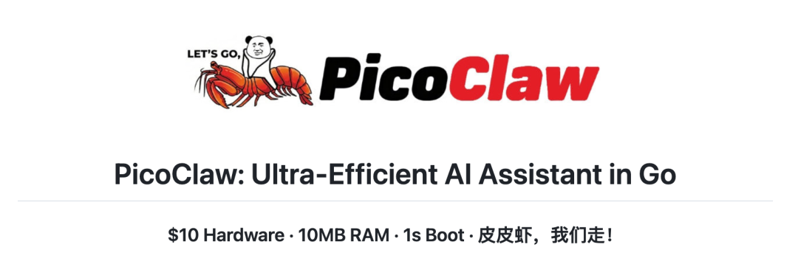
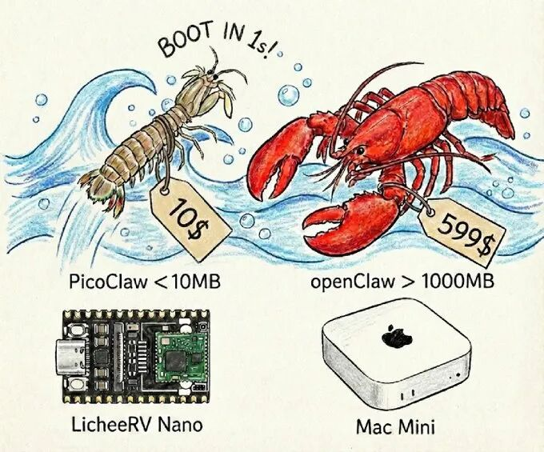

很多开发者（包括我）都有过这样的挣扎：想在家里跑个 24 小时不关机的 AI 助理，但 OpenClaw 太吃资源了，不得不开一台 Mac mini 或者云服务器，电费和云服务器费每个月都是成本。
难道就没有一个能跑在‘电子垃圾’上的 AI 吗？
Sipeed（矽速科技）站了出来，反手甩出了一个名为 PicoClaw 的开源项目。

这个项目很有意思，它的官方 Slogan 极其接地气：“皮皮虾，我们走！” (Pipi Shrimp, let's go!)。
也是一款超级轻量的 OpenClaw 瘦身工具，完全受之前给大家推荐的那个港大开源的纳米级 OpenClaw 的启发，而进行研发的超轻量级个人 AI 助手。
它使用 Go 从头开始重构，通过自引导过程实现，其中 AI 代理本身驱动了整个架构迁移和代码优化。
仅需 10 美元硬件和不到 10MB 内存即可运行：比 OpenClaw 内存少 99%，比 Mac mini 便宜 98%！

PicoClaw 的出现，意味着你可以把尘封的树莓派 3B、闲置的安卓电视盒，甚至是几十块钱的 RISC-V 开发板变成一个全功能的 AI Agent。
主要特点
• 超轻量级：内存占用小于 10MB — 比 Clawdbot 小 99%，核心功能依旧有。 • 成本极低：只需 10 美元的硬件即可高效运行 — 比 Mac mini 便宜 98%。 • 闪电般快速：启动速度提升 400 倍，即使在 0.6GHz 单核处理器下也能在 1 秒内启动。 • 真正的可移植性：单个自包含二进制文件，可在 RISC-V、ARM 和 x86 平台之间运行，一键启动！ • AI引导：自主Go原生实现 — 95%由代理生成的核心，并由人参与改进。 • 多渠道接入：支持接入Telegram、Discord、QQ、钉钉等即时社交应用。 • Skills支持：同时支持 sills 技能安装应用。
虽轻量，却功能齐全
俗话说的麻雀虽小，五脏俱全！
别看它体积小，它保留了 Agent 的核心三要素：感知、思考、行动。
• 多渠道连接：它不挑食，支持 Telegram, Discord, QQ, 钉钉。这意味着你可以用微信/钉钉在公司远程控制家里的设备。 • 工具调用：它不是只会聊天的 Bot。它可以 执行 Shell 命令、读写文件。 • 语音与搜索：接入 Groq (Whisper) 做语音转文字，接入 Brave Search 做联网搜索。这使得它具备了“看世界”和“听声音”的能力。
真正牛的点，是嵌入式运行。
最低可以跑在：
• LicheeRV-Nano（$9.9） • NanoKVM • MaixCAM • 树莓派 • 旧手机刷 Linux • 路由器（理论上）
这不是玩具，这是边缘计算趋势。
快速入手
最简单的一种方式是使用预编译二进制文件进行安装，直接到项目 Release 下载即可。
另一种方式就是本地源代码编译：
git clone https://github.com/sipeed/picoclaw.git
cd picoclaw
make deps
# Build, no need to install
make build
# Build for multiple platforms
make build-all
# Build And Install
make install当然，也有Docker一键部署：
# 1. Clone this repo
git clone https://github.com/sipeed/picoclaw.git
cd picoclaw
# 2. Set your API keys
cp config/config.example.json config/config.json
vim config/config.json # Set DISCORD_BOT_TOKEN, API keys, etc.
# 3. Build & Start
docker compose --profile gateway up -d
# 4. Check logs
docker compose logs -f picoclaw-gateway
# 5. Stop
docker compose --profile gateway down
# 特工模式（一次性）
# Ask a question
docker compose run --rm picoclaw-agent -m "What is 2+2?"
# Interactive mode
docker compose run --rm picoclaw-agent
# 重建
docker compose --profile gateway build --no-cache
docker compose --profile gateway up -d配置文件路径：~/.picoclaw/config.json
初始化命令：
picoclaw onboard配置文件信息：
{
"agents": {
"defaults": {
"workspace": "~/.picoclaw/workspace",
"model": "glm-4.7",
"max_tokens": 8192,
"temperature": 0.7,
"max_tool_iterations": 20
}
},
"providers": {
"openrouter": {
"api_key": "xxx",
"api_base": "https://openrouter.ai/api/v1"
}
},
"tools": {
"web": {
"search": {
"api_key": "YOUR_BRAVE_API_KEY",
"max_results": 5
}
}
}
}然后配置好相关的 AI 大语言模型及网页搜索功能（可选）的 API 就可直接用了。
命令行聊天指令：
picoclaw agent -m "What is 2+2?"如果要配置渠道，只需下面的配置格式：
{
"channels": {
"qq": {
"enabled": true,
"app_id": "YOUR_APP_ID",
"app_secret": "YOUR_APP_SECRET",
"allow_from": []
}
}
}最后运行网关服务：
picoclaw gateway至此就你拥有一个小巧不卡顿低延迟的超轻量级 24 小时在线的个人 AI 助手。
技术路线
OpenClaw 和 Nanobot，一个基于 TypeScript，一个基于 Python。
它们存在依赖多、内存重、冷启动慢、生态复杂等问题。
而 PicoClaw 采用 Go 语言进行重构，得益于 Go 语言的高效并发和单一二进制文件特性。
你不需要安装 Node_modules，也不需要配 Python 环境，一个文件丢进去，直接运行，内存占用极。
写在最后
PicoClaw 是“边缘 AI (Edge AI)”的一个缩影。
它证明了我们不需要巨大的算力也能运行智能体——只要把推理交给大模型 API，控制逻辑交给高效的 Go 程序。
如果说 OpenClaw 是 AI-Agent 的“操作系统”，那 PicoClaw 是 AI-Agent 的“微内核”。
看了这个项目只想说：🦐 皮皮虾，我们走。
GitHub：
https://github.com/sipeed/picoclaw

如果本文对您有帮助，也请帮忙点个 赞👍 + 在看 哈！❤️